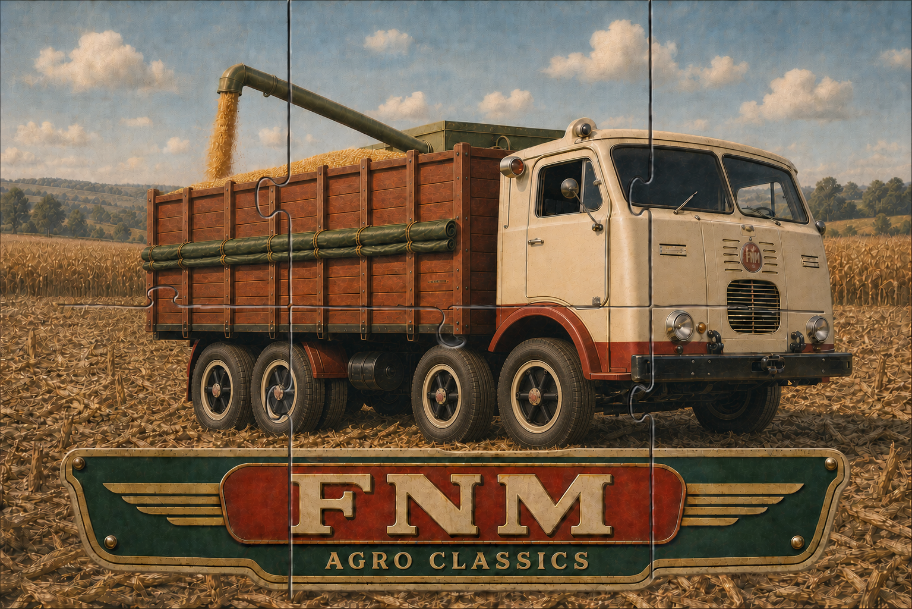
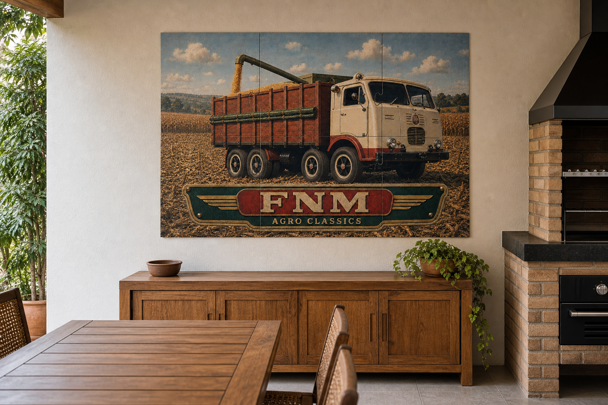
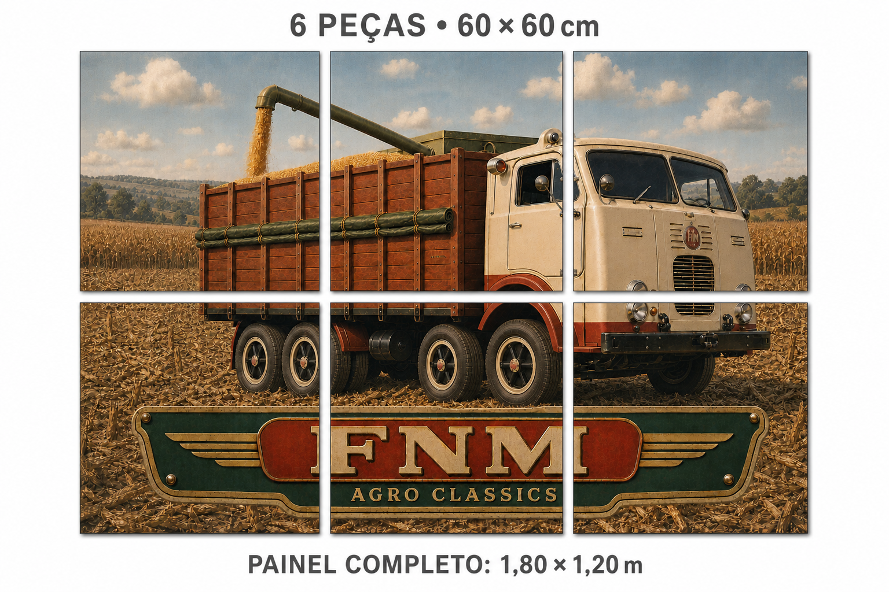

Painel Decorativo Modular FNM
Monte, peça por peça, uma homenagem à história do campo brasileiro. Um caminhão FNM em plena colheita, com o charme da arte vintage e uma decoração cheia de personalidade.
Produzido em aço galvanizado e revestido com impressão digital UV de alta qualidade, valoriza as cores e os detalhes da ilustração. O efeito envelhecido faz parte da arte impressa.
Venda por peça. Cada unidade corresponde a uma parte da imagem. Para completar o painel, adquira as seis peças diferentes da coleção.
60 × 60 cm
Medida de cada peça
Medida de cada peça
6 peças
3 colunas × 2 fileiras
3 colunas × 2 fileiras
1,80 × 1,20 m
Painel completo, sem espaçamento
Painel completo, sem espaçamento
A história do campo na sua parede
Ideal para garagens, churrasqueiras cobertas, espaços gourmet, escritórios, fazendas e ambientes de exposição. Uma opção de presente para apaixonados por caminhões antigos e pela vida no campo.

Ambientação ilustrativa, com escala visual aproximada.
Representação ilustrativa dos módulos. A divisão técnica da arte deve ser conferida antes da produção.Para preservar o acabamento, prefira ambientes internos ou áreas cobertas.